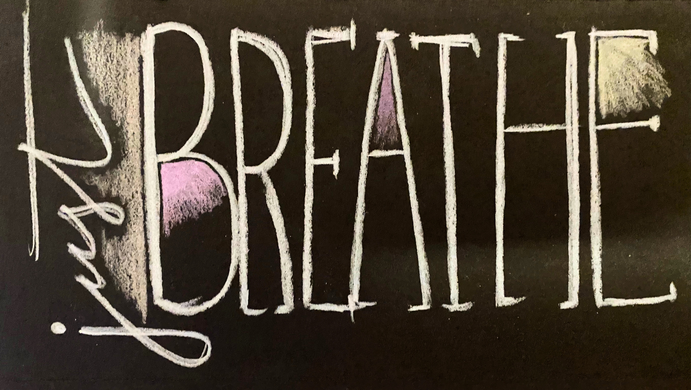
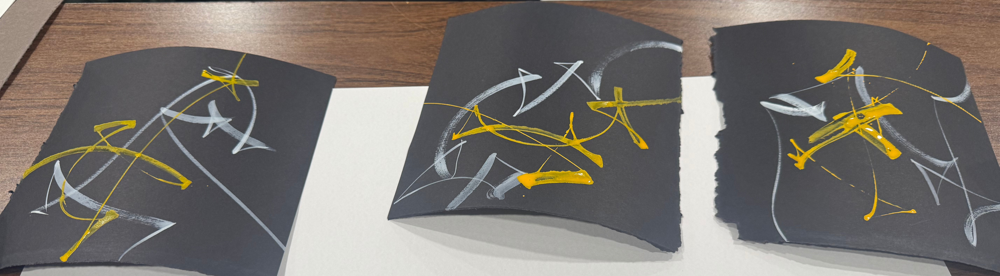
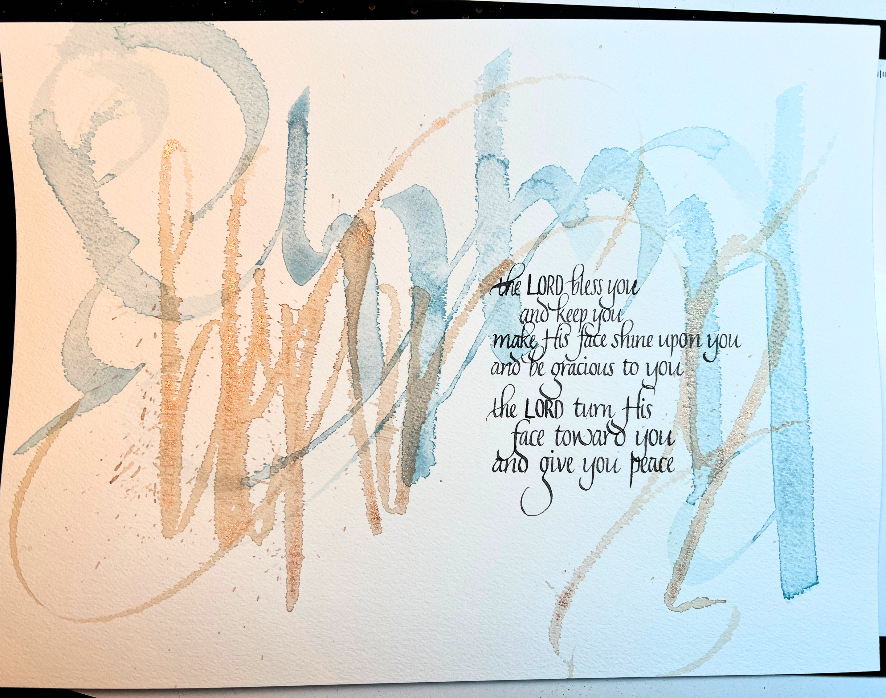
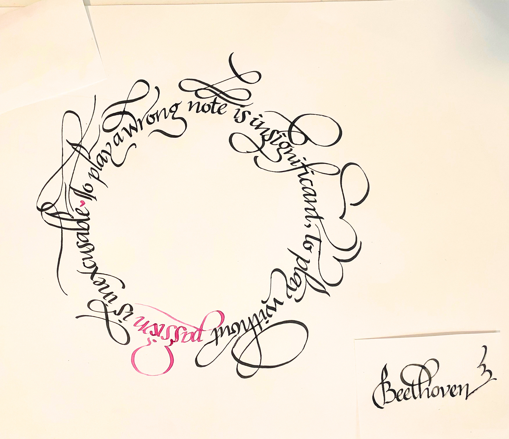
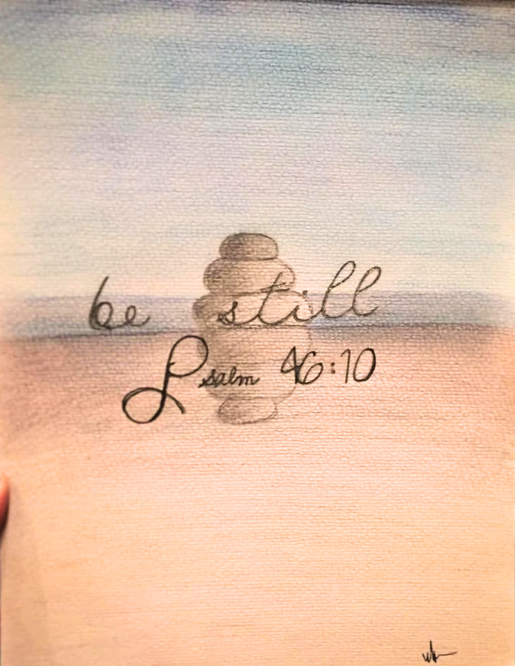

Permission to Play
Trying New Things, Learning from the Greats, and Finding My Own
Style
8/19/2026 by Melissa Hundley

It’s important to play (it’s also important to breathe…just in case you didn’t already know that). I’ve found this to be especially important when it comes to creativity. Over the years, I’ve had the privilege of taking several workshops with some incredible calligraphers around the world and those moments of learning and trying something new, have taught me to always be willing to try something, and if you like it, adapt it to your style and use it!

Often I'll have an idea that I want to produce (such as watercolor flowers for a background), but I don't always know how to do it. So giving myself permission to try something new...in this case it was trying a dagger-shaped paintbrush instead of a round one to see what kind of petal shapes I could achieve. The result was something I was so happy with, but younger me would have been so worried about making the flower perfect, that she wouldn't have tried the new brush or technique. It makes me wonder...how many things have I missed out on becuase I wasn't willing to make a mistake, or have a test turn out ugly?

I love learning. If you know me, you know I have a tendency to collect college degrees (not really, I just have more than I really need...). I love that my previous season of work was in higher education where I got to share that love with other like-minded people. I had the privilege attending an in-person workshop with Massimo Polello, an Italian calligrapher who specializes in abstract calligraphy. I took a workshop from him during the pandemic online and his skill with taking a simple word and creating such beauty abstractly was mindblowing to me. While I am a creative, I am also very logical and structured in how I think. I think some of that comes from being a classically-trained musician where there are rules to follow to create beautiful music, but now I'm learning that a little chaos (or as I would often tell a brilliantly talented pianist friend of mine, 'alternative pitches') can add incredible beauty to a piece of art or music.

This is an example of that. One concept that I really took into practice from the first workshop with Massimo was to deconstruct the letters into individual strokes. From there, you connect the strokes in different places. The background of this piece reads "blessing" both right-side up and upside down. You wouldn't know it if I didn't tell you (most likely), but it makes the background interesting while not taking away from the actual text.

Another workshop I attended online was about flourishing and writing in a circle. I took it primarily to learn how to flourish better but found the challenge of writing on a circle to be a lot of fun. We were told to bring a short-ish quote to practice with that had both acender and decender letters (letters that have stems that go above the letter, and below the letter). I took to my favorite place to source quotes...Pinterest! We learned the basics of flourishing, and then had the opportunity to work on our own and ask questions as we went along. At the time, I didn't really love what I did...but looking back on it, I'm finding lots of things that are a little bit out of my normal style that I really love and will most likely revisit in my own practice. Playing and experiementing are important!

So today, give yourself permission to play...to be still...to step away from the normal hurried pace of life and just be. I'm giving you permission!